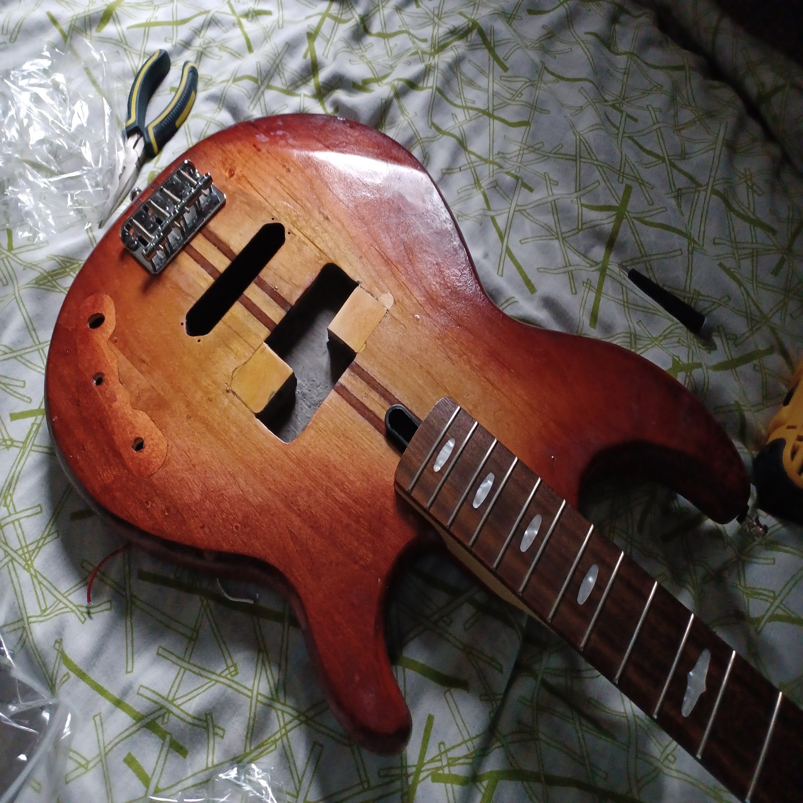

|
George Proussalidis I'm a Business Economics student at York University. I've entered this program with a wealth of experience in both Electrical and Automotive Engineering at York University and Ontario Tech University respectively. Though I did not complete either of those programs, I was able to accomplish notable projects in my time there. In my spare time, I play bass guitar. My musical interest is steeped in Japanese Jazz Fusion. This genre is technically challenging, causing my skill level to improve dramatically in the short time that I have been playing the bass guitar. I have maintained a YouTube channel over the last eight years. Though I do not upload on it frequently, it is a creative output for my projects. |
{kind=link}
Project FocusesI'm interested in music, automotive, and simracing. The following list includes some notable projects I have been involved in. |
|
|
Arduino- and Matlab-Based Simracing Stick Shift
George N. Proussalidis 2021 video A hand-built stick shift which enables the end user to realistically change gears in a racing videogame. |
|

|
Yamaha BB2000 Conversion
George N. Proussalidis York University, 2023 video Modifying a used Yamaha bass guitar to emulate the tonal and visual qualities of a vintage Yamaha BroadBass 2000. |

|
Japanese Jazz Fusion Spotify Archive
George N. Proussalidis Spotify, ongoing (est. 2022) download links Hosting a public archive of readily accessible and exclusive live performances and region-locked albums on Spotify. Audio quality is improved and album covers are created by members of the community. |
|
Feel free to steal this website's source code. Do not scrape the HTML from this page itself, as it includes analytics tags that you do not want on your own website — use the github code instead. Also, consider using Leonid Keselman's Jekyll fork of this page. |